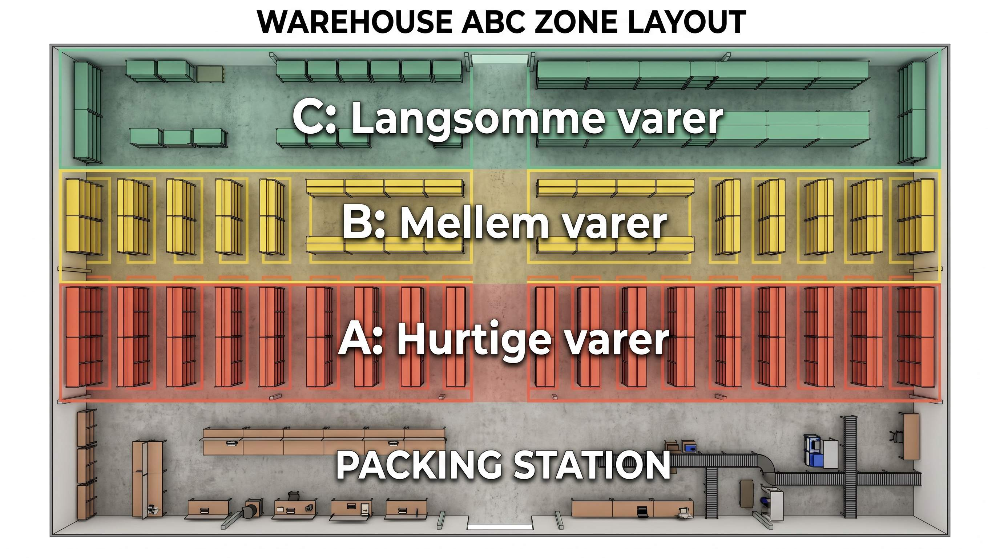

Kigger du på dit lager, står varerne med størst sandsynlighed der, hvor de tilfældigt endte da de ankom. Den bedste hylde fra indgangen er fyldt med en langsomt-saelgende vare, mens din bestseller står bagest i moerket.
Det er ingen kritik. Det sker på næsten alle lagre. Men det koster tid. Og tid er penge.
ABC-placering er svaret: placer de mest solgte varer taettest på pakkebordet. Placer de mindst solgte yderst. Resultatet er kortere plukruter, mindre gangtid og lavere pris pr. ordre.
👉 SmartPack viser ABC-analyse på dine varer direkte i indkøbsmodulet. Se systemet i praksis
Hvad er A, B og C?
ABC-klassifikation tager udgangspunkt i salgshyppighed, antal pluk eller omsætning. Det kan være:
- A-varer: De 20% af dine SKU'er der står for 70-80% af alle plukjobs. De skal være taettest på pakkebordet, i oejenhojde på reolerne.
- B-varer: De næste 30% af SKU'er, der tilsammen udgoor ca. 15-20% af plukjobs. Placeres i mellemzonen.
- C-varer: De resterende 50% der står for under 10% af plukjobs. Kan godt staa laengst vaek, under gulvhøjde eller på overste hylde.
Pareto-princippet gælder her: 20% af dine varer giver 80% af arbejdsbyrden. Det er dem der skal være lette at naa.
Sådan beregner du det
Tag dine plukdata fra de seneste 3-6 maaneder. Hvis du ikke har systemdata, kan du trækkke ordrehistorik fra din webshop og taelle manuelt.
Sorterings-tricket:
- Lav en liste over alle dine SKU'er med antal pluk pr. SKU i perioden.
- Sorter faaldende efter antal pluk.
- Beregn kumulativ procent af total pluk.
- SKU'er op til 70-80% af total = A. De næste op til 90-95% = B. Resten = C.
Det tager typisk 1-2 timer at gøre for forste gang. Bagefter er det et maanedsvaerk at opdatere.
Placering i praksis: hvad gaer i A-zonen?
A-zonen er omraadet fra pakkebordet og ud til ca. 10-15 meters gangafstand. Her skal dine topvarer.
Inden for A-zonen er der også en prioritering:
- Bedste hyldehøjde (80-120 cm): De absolut hurtigst gaende varer. Ingen boejen, ingen rækkeen op.
- Over oejenhojde (120-180 cm): Gode A-varer, men ikke de bedste. Kræver let opstrækken.
- Under knaehøjde (under 60 cm): Sidst i A-zonen. Svaert at plukke, men stadig naere nok til at det er acceptabelt for A-varer.
Tunge varer hoerer til på pallepladser og i bundhøjde, uanset om de er A, B eller C. Ergo-hensyn trumfer altid zone-regler.
De fejl der sætter det hele over styr
Her er de fejl vi ser oftest:
- ABC-klassifikation fra en dato der er foraedet. Salgsmixet ændrer sig. En julevare er A i november og C i januar. Opdater klassifikationen efter sæsonerne.
- Man glemmer at flytte varerne. At klassificere er let. At rykke fysisk rundt på 50 produkter er arbejde. Mange gør det første, men ikke det andet.
- Blanding af A og C i samme zone. Når en ny vare ankommer, stoppes den på den nærmeste ledige plads, hvilket er typisk midt i A-zonen. Inden laenge er zonerne blandede.
- Ingen markering af zoner på lageret. Hvis medarbejdere ikke ved, hvilken zone der er hvilken, hjælper klassifikationen ikke. Maeerk gulvet eller hylderne tydeligt.
Opdatering og vedligeholdelse
ABC-klassifikation er ikke noget du laver een gang og glemmer. Salgsmixit ændrer sig, nye produkter kommer til, og gamle falder ud.
Et fornuftigt vedligeholdelsesinterval:
- Kvartalsvis: gennemgå om A/B/C-kategorier stadig holder.
- Ved sæsonstart: justering af A-varer til at afspejle sæsonsortimentet.
- Ved nye produktlanceringer: placeringen fra dag et skal baseres på forventet salgstakt, ikke på hvilken plads der er ledig.
I SmartPack ser du ABC-analyse direkte under produktoversigten og indkøbsmodulet. Systemet viser hvilke SKU'er der har ændret salgstakt siden sidst, saa du kan handle på det.
Hvad det giver i praksis
Et lager med 300 unikke SKU'er og 200 ordrer om dagen sparer typisk 25-40% gangafstand pr. pluk, når A-varerne er sat rigtigt. Det er 30-60 minutters pluktetid om dagen, som direkte reducerer din lageromkostning pr. ordre.
Og det er uden at købe nyt udstyr, ansætte flere folk eller ændre på pakkeprocessen. Kun en anderledes maade at stille tingene på.